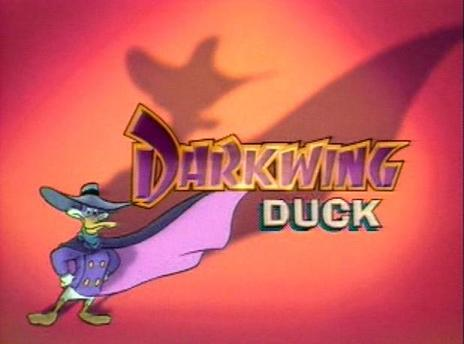

 This animated action adventure television series produced by The Walk Disney Company and ran from 1991-1992 on The Disney channel. It featured the eponymous anthropomorphic duck superhero whose alter ego is mild-mannered single quacker Drake Mallard. It is the only direct spin-off of DuckTales.
Darkwing Duck tells the adventures of the titular superhero, aided by his sidekick and pilot Launchpad McQuack. In his secret identity of Drake Mallard, he lives in an unassuming suburban house with his adopted daughter Gosalyn, next door to the baffingly dim-witted Muddlefoot family. Darkwing struggles to balance his egotistical craving for fame and attention against his desire to be a good father and help do good in St. Canard.
With his long bill, Lone Ranger mask, billowing cape and outsized slouch hat, Darkwing looks suspiciously like Daffy Duck in his swashbuckler outfit from Chuck Jones' "The Scarlet Pumpernickel" (1950). The use of Warners-style takes--quick looks at the camera, flickering eyebrows, hammy mock-heroic poses--only emphasizes the similarities. But Daffy was funny, and this inept crime fighter who describes himself as "... the terror that flaps in the night...the winged scourge that pecks at your nightmares" isn't.< /br> - Charles SolomonInformation courtesy of Wikipedia